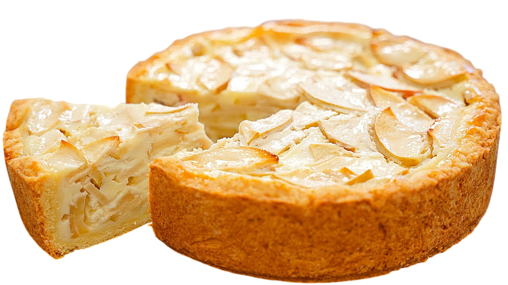
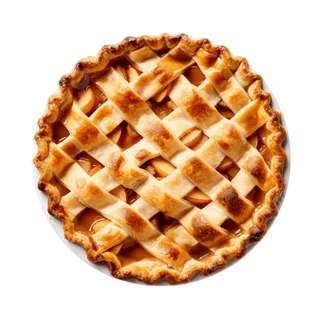
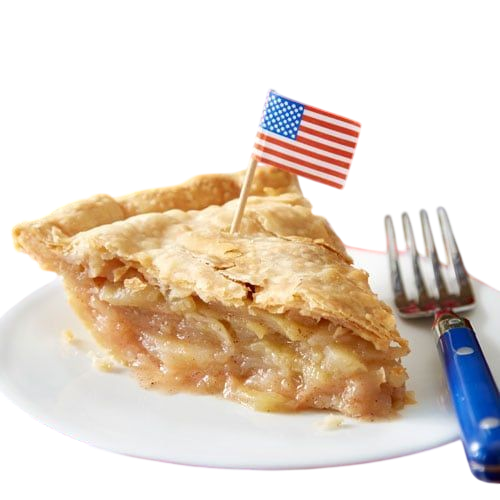
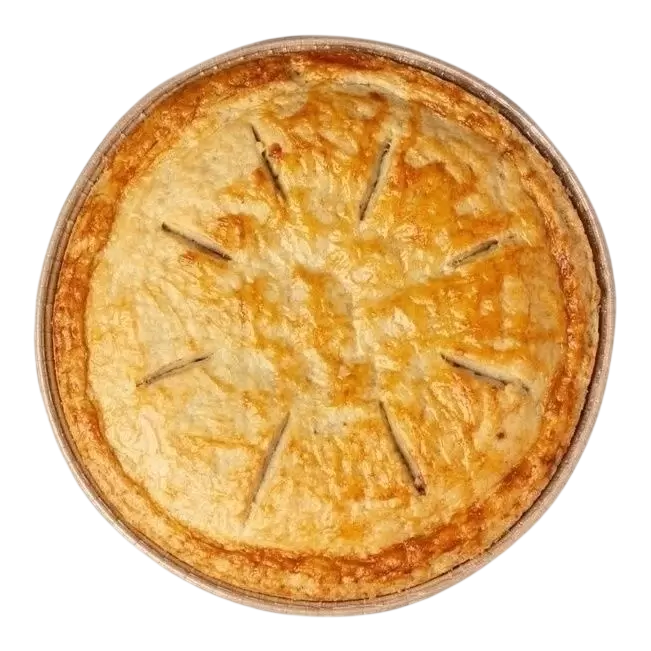
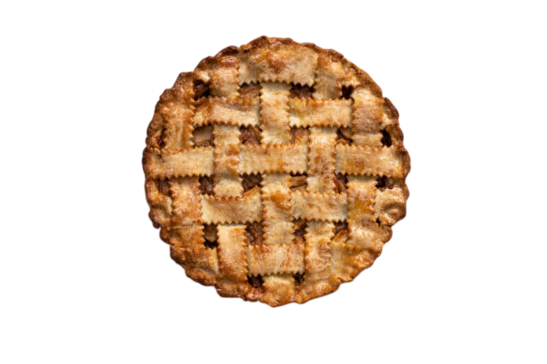
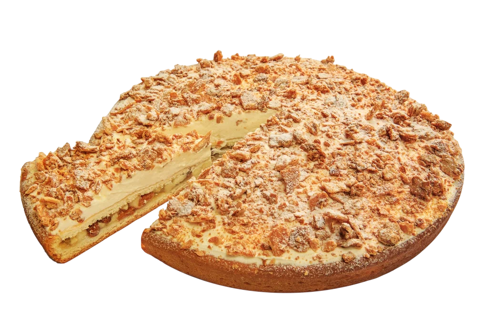
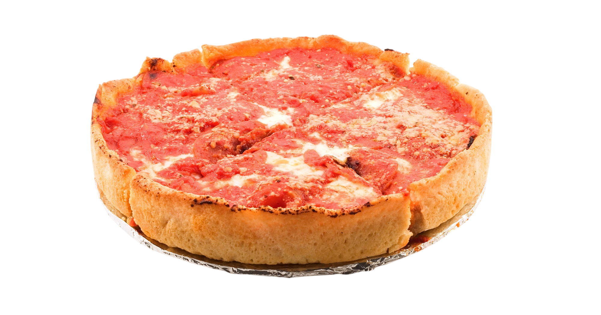
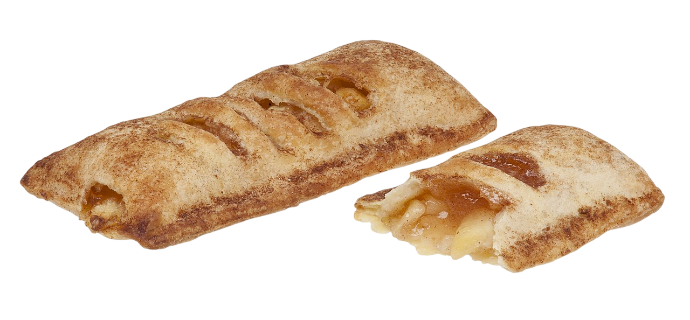
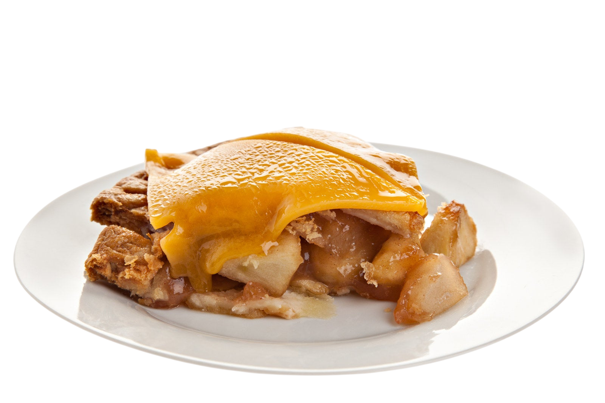
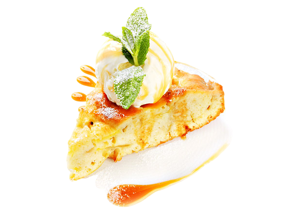

Традиционный яблочный пирог — это классика, которая держится на трех «китах»: тесте, начинке и аромате.

Тесто
В зависимости от рецепта это может быть:
Песочное: Мука, холодное сливочное масло, щепотка соли и ледяная вода (иногда яйцо). Это дает ту самую рассыпчатую корочку.
Слоеное: Для быстрых пирогов или штруделей.
Бисквитное: Как в классической «Шарлотке» — яйца, сахар и мука.
Начинка
Яблоки: Главный секрет — брать кислые или кисло-сладкие сорта (например, Антоновка или Гренни Смит). Они не превращаются в кашу и держат форму.
Сахар: Обычный белый или коричневый (тростниковый), который дает карамельный привкус.
Загуститель: Если яблоки очень сочные, добавляют немного крахмала или муки, чтобы дно пирога не размокло.
Сливочное масло: Небольшие кусочки поверх яблок делают начинку нежной и сливочной.
Специи(тот самый аромат)
Без них яблочный пирог — просто булка с фруктами
Корица: Самый важный ингредиент.
Мускатный орех или имбирь: Для более сложного, пряного вкуса.
Лимонный сок: Чтобы яблоки не темнели и для баланса сладости.
Ваниль: Экстракт или сахар.
Разновидность
Пирог может быть открытым (яблоки сверху)
закрытым (слой теста сверху)
или с штрейзелем (хрустящая крошка из масла, сахара и муки).
— это настоящий микс культур, который начался в Европе, а стал символом Америки.
Первый записанный рецепт яблочного пирога датируется 1381 годом (Англия). Но тогдашний пирог сильно отличался от современного
Тесто было несъедобным: Его называли «coffyn» (гроб). Это был твердый панцирь из муки и воды, который служил просто контейнером для начинки. Его часто просто выбрасывали.
Никакого сахара: Сахар был безумно дорогим. Сладость давали инжир, изюм и груши, которые добавляли к яблокам.
В XV–XVI веках французы довели до совершенства песочное тесто (pâte brisée), сделав корзинку пирога вкусной. А голландцы придумали «решетку» сверху и начали добавлять много пряностей и лимонный сок.

Интересный факт: в Америке не было яблок. Когда колонисты прибыли в Новый Свет, они обнаружили там только дикую лесную яблоню с мелкими и горькими плодами.
Европейцы привезли саженцы с собой.
Яблони стали высаживать повсеместно (тут прославился легендарный персонаж Джонни Яблочное Семечко, который засадил яблонями огромные территории).
Фраза «As American as apple pie» (такой же американский, как яблочный пирог) появилась не сразу.

Чтобы узнать больше о Delmonico’s НАЖМИ НА НЕГО ＼(°O°)／
Американцы возвели яблочный пирог в культ, поэтому в разных штатах и семьях его готовят по-разному.

Конструкция: Начинка из яблок полностью спрятана между двумя слоями песочного теста.
Фишка: Сверху на тесте делают небольшие надрезы в форме лучей или листика, чтобы выходил пар. Часто посыпается сахаром для хруста.
Это тот самый классический пирог из мультфильмов и кино.

Самый фотогеничный вариант.
Конструкция: Верхний слой теста нарезается на полоски и переплетается «корзинкой».
Зачем это нужно: Через отверстия испаряется лишняя влага, поэтому начинка получается густой и карамельной, а не водянистой.

Очень популярен в Пенсильвании и штатах Среднего Запада.
Конструкция: Снизу — тесто, а сверху вместо второго слоя теста — штрейзель (жирная крошка из масла, муки, сахара и иногда овсяных хлопьев).
Вкус: Он намного слаще классического и имеет приятную хрустящую текстуру сверху.

Для тех, кто любит, чтобы яблок было очень много.
Конструкция: Готовится в глубокой форме. Начинки в два-три раза больше, чем в обычном пироге. Часто у него есть только верхняя «крышечка» из теста, а боковых стенок нет.

Популярны на Юге США (Миссисипи, Алабама).
Конструкция: Это порционные полукруглые пирожки (как чебуреки по форме), которые обжариваются во фритюре или на сковороде.
Вкус: Жирно, сладко и очень хрустяще. Часто их продают на заправках и в маленьких придорожных кафе.

Самый странный для иностранцев, но каноничный для Новой Англии (Вермонт).
Конструкция: Сыр либо добавляют прямо в тесто (натирают на терке), либо кладут ломтик чеддера на горячий кусок пирога при подаче.
Вкус: Соленый сыр нереально круто подчеркивает сладость запеченных яблок.
В США почти любой из этих пирогов тебе предложат подать A la Mode — это значит с огромным шариком ванильного мороженого сверху.

Кстати касаемо мультфильмов есть мультфильм которой так и называется Яблочный пирог.
Интересные факты
Несмотря на поговорку «американский как яблочный пирог», первый рецепт был написан в Англии в 1381 году. Там вообще использовали инжир и изюм вместо сахара.
В Средневековье тесто (его называли «гроб») было настолько жестким, что его часто не ели — оно служило просто формой для запекания яблок.
В 1644 году Оливер Кромвель в Англии пытался запретить пироги, считая их формой «греховного удовольствия». К счастью, запрет не прижился.
Был реальный парень (Джон Чепмен), который в XIX веке прошел босиком пол-Америки, засаживая всё яблонями. Но прикол в том, что его яблоки были кислыми — они подходили только для сидра или пирогов!
В штате Вермонт по сей день действует закон, согласно которому при подаче яблочного пирога нужно сделать «все возможное», чтобы подать его с порцией сыра чеддер или стаканом молока.
Во время Второй мировой американские солдаты говорили, что идут на фронт «за маму и яблочный пирог». Это сделало десерт мощнейшим символом патриотизма.
Самый большой яблочный пирог в мире весил более 13 тонн (13 667 кг)! Его испекли в 1944 году в Великобритании для сбора средств на военные нужды.
Большинство сортов яблок, которые мы любим есть свежими (например, Фуджи или Гала), превращаются в кашу в духовке. Для пирога нужны «крепкие орешки» вроде Гренни Смит.
Термин «яблочный пирог а-ля мод» (с мороженым) зародился в Нью-Йорке в конце XIX века. Говорят, один постоянный клиент отеля Cambridge постоянно требовал мороженое к пирогу, и официант просто дал этому название.